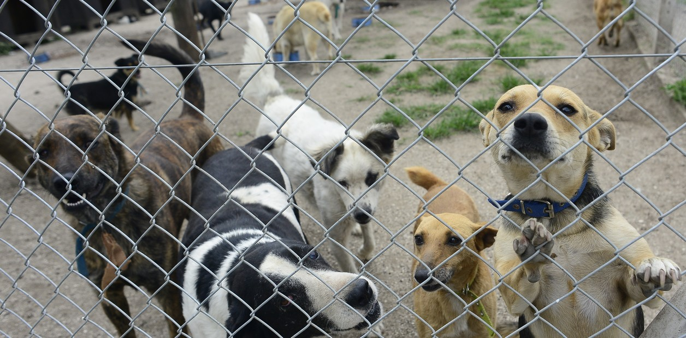
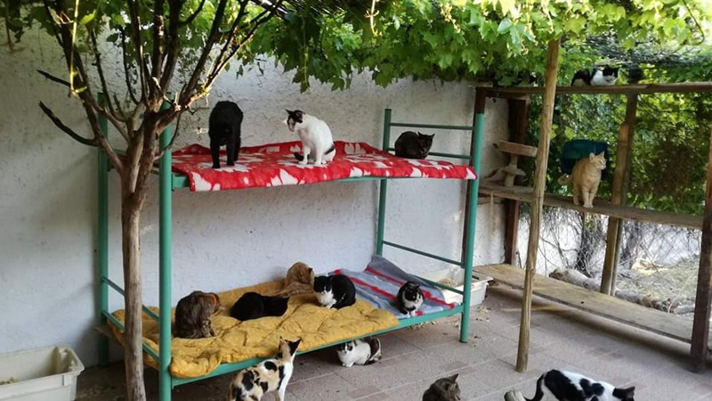

Refugio Esperanza
Ubicado en la zona norte de la ciudad, este refugio ha rescatado a más de 500 animales en situación de calle. Se especializan en la rehabilitación de perros mayores y con discapacidades.

Hogar Patitas
Un pequeño pero amoroso albergue en las afueras, dedicado al cuidado de gatos abandonados. Su equipo de voluntarios trabaja todos los días para brindar cariño, comida y atención médica.